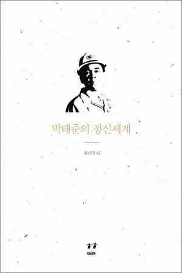

저자 최진덕, 김형효, 정인재, 서상문, 이상오, 임경순, 이영의, 강구영출판사 아시아발간일 2012년 4월 25일

책소개
포스코의 창업자 청암 박태준에 대한 학문적 연구의 첫 성과를 체계화한 [청암박태준연구총서] 전 5권. 2010년과 2011년에 이뤄진 기업가 청암 박태준의 제철보국 교육보국 철학과 기업가정신의 연구인 이 연구는, 포스코의 사사社史와 사보私報, 포스코에 대한 기존 연구 논문들, 포항방사광가속기연구소를 포함한 포스텍의 교사校史, 포스코교육재단과 학교들의 교사校史, 포항산업과학연구원RIST의 사사社史, 박태준에 대한 전기문학과 저서들, 신문과 잡지, 그리고 국판 편집으로 일만 쪽에 이르는 ‘박태준 어록’등이 기본 텍스트가 되었다. 여러 전문 분야 학자 38명의 32편 논문은 청암 박태준의 기업가정신을 다각도로 조명하고 있다.
제1권 <태준이즘>에서는 ‘나’가 아닌 국가를 위한 성취, 그의 정신세계를 '태준이즘'이라고 명명하고 이를 연구하고, 제2권 <박태준의 정신세계>에서는 군인의 기氣와 기업가의 혼魂을 가진 박태준의 정신세계를 연구한다. 제3권 <박태준의 리더십>에서는 철저한 완벽주의, 원칙주의, 고집, 용기, 그리고 저항의식으로 이루어진 그의 리더십을 살펴보고, 제4권 <박태준의 경영철학 1편>에서는 스톡데일 패러독스, 현실 긍정의 경영철학을, 제5권 <박태준의 경영철학 2편>에서는 지속 가능한 가치를 창조하는 기업가정신을 살펴본다.
저자소개
제2권 박태준의 정신세계
최진덕 한국학중앙연구원 교수
김형효 서강대학교 석좌교수
정인재 서강대학교 명예교수
서상문 중앙대학교 강사
이상오 연세대학교 교수
임경순 포항공과대학교 교수
이영의 강원대학교 교수
강구영 ㈜기쁨과 행복 대표, 경제학 박사
목차
제2권 박태준의 정신세계_최진덕 외
국가와 기업을 위한 ‘순교자적 사명감’ : 박태준에 대한 정신사적 반성과 존재론적 성찰/ 최진덕, 김형효
양명학 관점에서 본 청암 박태준의 유상정신/ 정인재
청암 박태준의 무사사생관 : 생성?실천?의의/ 서상문
청암 박태준의 포스코학교 설립 이념에 대한 해석학적 연구: ‘공교육 정상화’의 교육학적 담론 형성을 위하여/ 이상오
박태준과 과학기술/ 임경순
청암사상의 철학치료 모형/ 이영의
한 사상 관점에서 본 포항제철 신화 : 선과 무의 만남/ 강구영
추천평
참된 인간의 길을 보여 준 우리의 영원한 사표입니다.
그분은 전 사원들에게 주택을 제공하고, 자식들에게 대학까지 장학금을 지원한 최초이자 마지막 기업인이었습니다. 그 어느 대통령이 이분보다 큰 업적을 세웠습니까. 그분은 대통령보다 더 대통령다운 조국의 일꾼, 민족의 위인이었습니다.
- 조정래(소설가)
당신의 길은 목숨을 거는 형극의 길이었지만 황무지를 옥토로 개간하고 무에서 유를 창조하는 길이었습니다. 제철보국과 교육보국으로 일류 국가의 밑거름이 되겠다는 신념과 실천은 당신의 삶 자체였습니다. 전쟁에서 외환 위기 극복까지, 20세기 조국의 고난과 시련을 온몸으로 뚫고 나아간 당신의 리더십은 강력했습니다. 그러나 그 근본은 통합과 사랑, 청렴과 헌신, 완벽과 합리였습니다.
- 정준양(포스코 대표이사 회장)